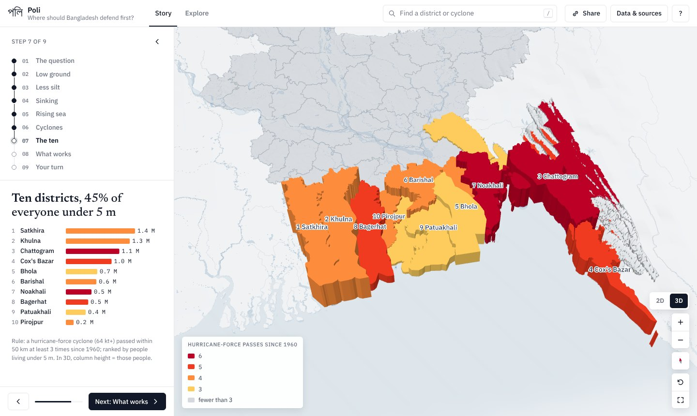

About this project
Where should Bangladesh defend first?

Poli is the Bangla word for silt, the stuff the delta is made of. Every metre of ground from Rajshahi to the Sundarbans was carried down by the Ganges, the Brahmaputra and the Meghna and left behind when they flooded. That process is slowing, the coast is settling, and the sea is rising to meet it. This map asks a plain question with that in mind: if the country could only start in a few places, which ones?
The answer it gives is a short list. Ten districts on the cyclone coast hold 45% of everyone who lives below 5 metres. The story walks through the reasons one at a time, on the same map, and then hands the list over so you can change the rule and see what moves.
The rule
A district joins the list when a cyclone of hurricane force, 64 knots or more, has passed within 50 km of it at least three times since 1960. The districts that qualify are ranked by how many people live on land under 5 metres. That is deliberately simple. It is a screen, not a cost-benefit study, and the Explore tab is there so that anyone who weighs things differently can try their own.
Reading the map
Step through with the arrows at the foot of the story panel, or with the keyboard. The 2D and 3D buttons show the same ground flat or tilted; in 3D the districts rise as columns. Steps that change over time have a small player at the bottom of the map. Click any district for its sheet: cyclone history, rivers, farming zones and the main crops, each ranked against the other 63. The cyclone button plays any of the fourteen named storms since 1970.
The tabs beside Story are an atlas. Rivers shows where the big rivers meet and how much each brings. Wetlands maps all 373 haors, the big beels and the winter waterbirds. Sundarbans shows the mangrove forest, its tigers, its fish and the cyclones that crossed it. Fish follows the hilsa, the Halda and the grounds in the Bay, and colours the districts by fish farmed, fish caught and shrimp. Crops colours the districts by landscape or by crop (jute too), plays the farming year month by month, and maps the tea gardens. Cyclones is a tracker for every storm since 1960. Floods puts the flood record and river erosion side by side. Click anything in a list and the map flies there.
Where the numbers come from
- Ground height
- SRTM 90 m (CGIAR-CSI). ETOPO5 for the Bay and the land beyond the border.
- Rivers
- HydroRIVERS v1.0, with long-term mean discharge; WDBII outside Bangladesh.
- People
- GPW v4, 2015. Districts and census counts: BBS, Population and Housing Census 2022.
- Cyclones
- IBTrACS v04r01 (NOAA). Deaths and damage: EM-DAT (CRED, UCLouvain).
- Farming zones
- BARC, Fertilizer Recommendation Guide 2018: the 30 agro-ecological zones and their main districts.
- Crops
- BBS, 45 Years Agriculture Statistics of Major Crops: for each crop, the latest year whose district figures add up to the national total.
- Silt, sinking, sea
- Rahman et al. 2018; Auerbach et al. 2015; Steckler et al. 2022; Becker et al. 2020.
- Land cover
- ESA WorldCover 2021.
- Floods
- FFWC, Annual Flood Report 2021: danger levels and record peaks at 81 gauges, and the flooded share of the country since 1954. Gauge positions from BWDB station lists.
- River erosion
- CEGIS erosion and accretion along the Jamuna, Padma and Ganges since 1973, with its 2025 figures and 2026 forecast; Banglapedia for the coast.
- Jute, crop calendar, tea
- BBS 45 Years Agriculture Statistics (jute, 2014-15, bales converted at 181.4 kg); Banglapedia (Agricultural Produce, Potato, Crop, Wheat) for the months; Bangladesh Tea Board figures as reported by The Daily Star and Prothom Alo.
- Sundarbans
- ESA WorldCover 2021 mangroves; Forest Department tiger survey 2024 as reported by Mongabay; DoF yearbooks for fish caught in the forest.
- Haors and beels
- DBHWD, Classification of Wetlands of Bangladesh, Annexure 2: Haors of Bangladesh (2016), after the BHWDB Haor Master Plan (2012); Banglapedia for the beels. Wet ground: ESA WorldCover 2021. Upazilas for placing haors: geoBoundaries.
- Waterbirds
- IUCN Bangladesh and Bangladesh Bird Club January counts, as reported; Alam et al. 2023 (Avian Conservation and Ecology); Regional Flyway Initiative priority sites (2024).
- Fish by district
- Department of Fisheries yearbooks, harmonised by Rabbi (2026), Zenodo doi:10.5281/zenodo.23466909.
- Fish
- Department of Fisheries hilsa landings; hilsa sanctuaries from Sustainability 14(13):7782; Halda egg collection from Department of Fisheries figures as reported in the press; fishing grounds from Banglapedia.
Every figure on the page, with the paper or file it came from, is listed in the project repository, together with the scripts that turn the raw files into the map.
What it cannot tell you
SRTM measures the top of whatever is on the ground, so the shares of low land are a floor and the mangroves look higher than they are. District figures are worked out on a 0.7 km grid. The cyclone wind is a textbook vortex placed on each recorded position, not a weather model. EM-DAT tolls differ from government tolls. The newest crop tables in the open record are a decade old. The relief is stretched upward so that a plain a few metres high can be seen at all.